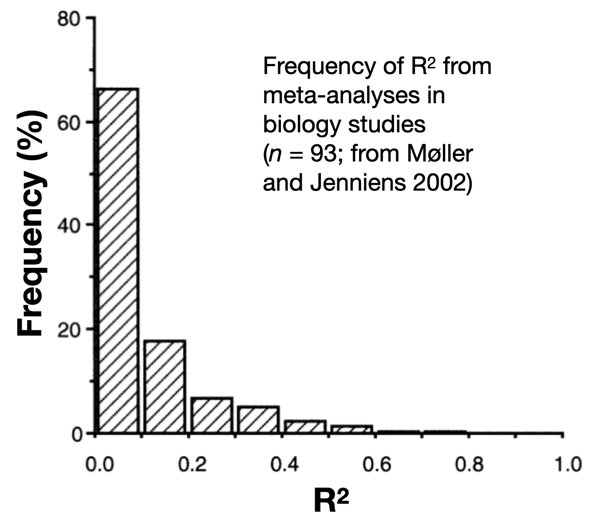

r.squaredLR(bestMod1)[1] 0.2644618
attr(,"adj.r.squared")
[1] 0.2646806This section is similar regardless of your model structure (e.g. error distribution assumption). The examples below all assume a normal error distribution assumption but you can use the process presented here for models of any structure.
In this section you will report
how much variation (deviance) in your response is explained by your model
how important each of your predictors is in explaining that deviance
If you will recall, your whole motivation for pursuing statistical modelling was to explain variation in your response. Thus, it is important that you quantify how much variation in your response you are able to explain by your model.
Note that we will discuss this as “explained deviance” rather than “explained variation”. This is because the term “variance” is associated with models where the error distribution assumption is normal, whereas deviance is a more universal term.
When you have a normal error distribution assumption and linear shape assumption, you can capture the amount of explained deviance simply by comparing the variation in your response (i.e. the starting variation before you fit your model - the null variation) vs. the variation in your model residuals (i.e. the remaining variation after you fit your model - the residual variation) as the \(R^2\):
\(R^2 = 1 - \frac{residual variation}{null variation}\)
From this equation, you can see how, if your model is able to explain all the variation in the response, the residual variation will be zero, and \(R^2 = 1\). Alternatively, if the model explains no variation in the response the residual variation equals the null variation and \(R^2 = 0\).
For models with other error distribution and shape assumptions, you need another way of estimating the goodness of fit of your model. You can do this through estimating a pseudo \(R^2\).
There are many many different types of pseudo \(R^2\).1 One useful pseudo \(R^2\) is called the Likelihood Ratio \(R^2\) or \(R^2_{LR}\). The \(R^2_{LR}\) compares the likelihood of your best-specified model to the likelihood of the null model:
\(R^2_{LR} = 1-exp(-\frac{2}{n}(log𝓛(model)-log𝓛(null)))\)
where \(n\) is the number of observations, \(log𝓛(model)\) is the log-likelihood of your model, and \(log𝓛(null)\) is the log-likelihood of the null model. The \(R^2_{LR}\) is the type of pseudo \(R^2\) that shows up in your dredge() output when you add extra = "R^2" to the dredge() call. You can calculate \(R^2_{LR}\) by hand, read it from our dredge() output, or estimate it using r.squaredLR() from the MuMIn package:
r.squaredLR(bestMod1)[1] 0.2644618
attr(,"adj.r.squared")
[1] 0.2646806Note here that two values of \(R^2_{LR}\) are reported. The adjusted pseudo \(R^2\) given here under attr(,"adj.r.squared") has been scaled so that \(R^2_{LR}\) can reach a maximum of 1, similar to a regular \(R^2\)2.
Let’s compare this to the traditional \(R^2\):
1-summary(bestMod1)$deviance/summary(bestMod1)$null.deviance[1] 0.2644618Note that the two estimates are similar: One nice feature of the \(R^2_{LR}\) is that it is equivalent to the regular \(R^2\) when our model assumes a normal error distribution assumption and linear shape assumption, so you can use \(R^2_{LR}\) for a wide range of models.

Recall that your goal in hypothesis testing is to explain the variation in your response - preferably as much variation as possible! So it is natural to hope for a high R^2 but this is a trap: the results of your hypothesis testing3 are valuable whether you are able to explain 3% or 93% of the variation in your response. Remember:
You are progressing science either way - helping the field learn about mechanisms and design future experiments.
Remaining unexplained variation points to potential limitations in measuring predictor effects and/or other predictors (not in your model) that may play a role.
For context, here is a plot of R^2 values from a meta-analysis of biology studies:
When you have more than one predictor in your model, you may also want to report how relatively important each predictor is to explaining deviance in your response. This is also called “partitioning the explained deviance” to the predictors or “variance decomposition”.
To get an estimate of how much deviance in your response one particular predictor explains, you may be tempted to compute the explained deviance (\(R^2\)) estimates of models fit to data with and without that particular predictor. Let us try with our Example 4:
dredgeOut4Global model call: glm(formula = Resp4 ~ Cat5 + Num6 + Cat5:Num6 + 1, family = gaussian(link = "identity"),
data = myDat4)
---
Model selection table
(Int) Ct5 Nm6 Ct5:Nm6 R^2 df logLik AICc delta weight
8 98.35 + -0.002931 + 0.8557 7 -234.930 485.1 0.00 1
4 92.25 + 0.009650 0.8166 5 -246.915 504.5 19.39 0
2 96.93 + 0.7923 4 -253.133 514.7 29.61 0
3 94.92 0.017780 0.0848 3 -327.278 660.8 175.73 0
1 104.00 0.0000 2 -331.708 667.5 182.46 0
Models ranked by AICc(x) If you want to get an estimate as to how much response deviance the Num6 predictor explains, you might compare the \(R^2\) of a model with and without the Num6 predictor.
Let’s compare model #4 (that includes Num6) and model #2 (that does NOT include Num6):
R2.mod4 <- (dredgeOut4$`R^2`[2]) # model #4 is the second row in dredgeOut4
R2.mod2 <- (dredgeOut4$`R^2`[3]) # model #2 is the third row in dredgeOut4
diffR2 <- R2.mod4 - R2.mod2 # find estimated contribution of Cont to explained deviance
diffR2[1] 0.02429225So it looks like 2.4% of the variability in Resp4 is explained by Num6.
But what if instead you chose to compare model #3 (that includes Num6) and model #1 (that does NOT include Num6):
R2.mod3 <- (dredgeOut4$`R^2`[4]) # model #3 is the fourth row in dredgeOut4
R2.mod1 <- (dredgeOut4$`R^2`[5]) # model #1 is the fifth row in dredgeOut4
diffR2 <- R2.mod3 - R2.mod1 # find estimated contribution of Cont to explained deviance
diffR2[1] 0.08480009Now it looks like 8.5% of the variability in Resp4 is explained by Num6! Quite a different answer! Your estimates of the contribution of Num6 to explaining the response deviation do not agree because of collinearity among your predictors - more on this in the section on Model Validation.
There are a few options you can use to get a robust estimate of how much each predictor is contributing to explained deviance in your response.
One option for partitioning the explained deviance when you have collinearity among your predictors is hierarchical partitioning. Hierarchical partitioning estimates the average independent contribution of each predictor to the total explained variance by considering all models in the candidate model set4. This method is beyond the scope of the course but see the rdacca.hp package for an example of how to do this.
Another method (that we will be using) for estimating the importance of each term (predictor or interaction) in your model is by looking at the candidate model set ranking made by dredge(). Here you can measure the importance of a predictor by summing up the Akaike weights for any model that includes a particular predictor. The Akaike weight of a model compares the likelihood of the model scaled to the total likelihood of all the models in the candidate model set. The sum of Akaike weights for models including a particular predictor tells you how important the predictor is in explaining the deviance in your response. You can calculate the sum of Akaike weights directly with the sw() function in the MuMIn package:
sw(dredgeOut4) Cat5 Num6 Cat5:Num6
Sum of weights: 1 1 1
N containing models: 3 3 1 Here we can see that all model terms (the predictors Cat5 and Num6 as well as the interaction) are equally important in explaining the deviance in Resp4 (they appear in all models that have any Akaike weight).
Let’s look at these two steps
how much deviance in your response is explained by your model
how important each of your predictors is in explaining that deviance
with our examples:
R2 <- r.squaredLR(bestMod1)
R2[1] 0.2644618
attr(,"adj.r.squared")
[1] 0.2646806The best-specified model explains 26.4% of the deviance in Resp1.
dredgeOut2Global model call: glm(formula = Resp2 ~ Cat2 + Cat3 + Cat2:Cat3, family = gaussian(link = "identity"),
data = myDat2)
---
Model selection table
(Int) Ct2 Ct3 Ct2:Ct3 R^2 df logLik AICc delta weight
8 364.9 + + + 0.69800 13 -553.634 1137.5 0.00 0.964
4 354.9 + + 0.62540 7 -564.419 1144.1 6.55 0.036
2 388.5 + 0.55300 5 -573.243 1157.1 19.63 0.000
1 348.3 0.00000 2 -613.508 1231.1 93.64 0.000
3 331.1 + 0.03933 4 -611.502 1231.4 93.92 0.000
Models ranked by AICc(x) sw(dredgeOut1) Cat1
Sum of weights: 1
N containing models: 1 With Example 1, you have only one predictor (Cat1) and so this predictor is responsible for explaining all of the variability in your response (Resp1). You can see that it appears in all models with any weight with your sw() function from the MuMIn package.
R2 <- r.squaredLR(bestMod2)
R2[1] 0.6980474
attr(,"adj.r.squared")
[1] 0.6980507The best-specified model explains 69.8% of the deviance in Resp2.
dredgeOut2Global model call: glm(formula = Resp2 ~ Cat2 + Cat3 + Cat2:Cat3, family = gaussian(link = "identity"),
data = myDat2)
---
Model selection table
(Int) Ct2 Ct3 Ct2:Ct3 R^2 df logLik AICc delta weight
8 364.9 + + + 0.69800 13 -553.634 1137.5 0.00 0.964
4 354.9 + + 0.62540 7 -564.419 1144.1 6.55 0.036
2 388.5 + 0.55300 5 -573.243 1157.1 19.63 0.000
1 348.3 0.00000 2 -613.508 1231.1 93.64 0.000
3 331.1 + 0.03933 4 -611.502 1231.4 93.92 0.000
Models ranked by AICc(x) sw(dredgeOut2) Cat2 Cat3 Cat2:Cat3
Sum of weights: 1.00 1.00 0.96
N containing models: 3 3 1 Here you can see that Cat2 and Cat3 are equally important in explaining the deviance in Resp2 (they appear in all models that have any Akaike weight), while the interaction term between Cat2 and Cat3 is less important (only appearing in one model with Akaike weight, though this is the top model).
R2 <- r.squaredLR(bestMod3)
R2[1] 0.764852
attr(,"adj.r.squared")
[1] 0.764852The best-specified model explains 76.5% of the deviance in Resp3.
dredgeOut3Global model call: glm(formula = Resp3 ~ Num4 + 1, family = gaussian(link = "identity"),
data = myDat3)
---
Model selection table
(Intrc) Num4 df logLik AICc delta weight
2 -226.9 260.1 3 -811.080 1628.4 0.00 1
1 2358.0 2 -883.457 1771.0 142.63 0
Models ranked by AICc(x) sw(dredgeOut3) Num4
Sum of weights: 1
N containing models: 1 With Example 3, you have only one predictor (Num6) and so this predictor is responsible for explaining all of the variability in your response (Resp3). You can see that it appears in all models with any weight with your sw() function from the MuMIn package.
R2 <- r.squaredLR(bestMod4)
R2[1] 0.855657
attr(,"adj.r.squared")
[1] 0.8567834The best-specified model explains 85.6% of the deviance in Resp2.
dredgeOut4Global model call: glm(formula = Resp4 ~ Cat5 + Num6 + Cat5:Num6 + 1, family = gaussian(link = "identity"),
data = myDat4)
---
Model selection table
(Int) Ct5 Nm6 Ct5:Nm6 R^2 df logLik AICc delta weight
8 98.35 + -0.002931 + 0.8557 7 -234.930 485.1 0.00 1
4 92.25 + 0.009650 0.8166 5 -246.915 504.5 19.39 0
2 96.93 + 0.7923 4 -253.133 514.7 29.61 0
3 94.92 0.017780 0.0848 3 -327.278 660.8 175.73 0
1 104.00 0.0000 2 -331.708 667.5 182.46 0
Models ranked by AICc(x) sw(dredgeOut4) Cat5 Num6 Cat5:Num6
Sum of weights: 1 1 1
N containing models: 3 3 1 Here you can see that Cat5, Num6 and the interaction Cat5:Num6 are all equally important in explaining the deviance in Resp4 (they appear in all models that have any Akaike weight).
check the rr2 package for many different options↩︎
this is called the Nagelkerke’s modified statistic - see ?r.squaredLR for more information↩︎
when done in a robust fashion↩︎
i.e. in the dredge() output↩︎